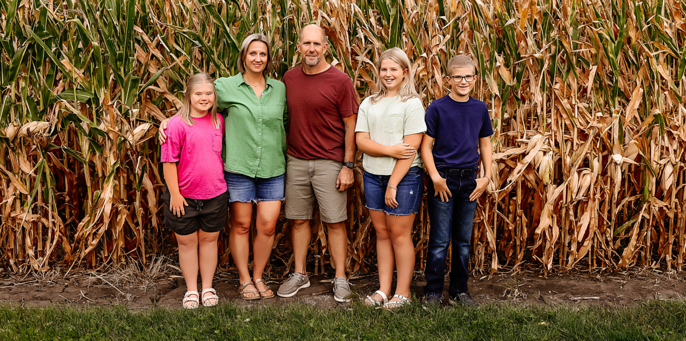

Cornfed: Sustainable Practices for Tomorrow
Farming families like the Bieglers have spent their entire lives working as stewards of the land – and they’re committed to handing it off to the next generation even better than they found it. The Biegler farm in Minnesota has been in the family for four generations and is currently home to Bryan, Lauren and their three children. Minnesota is the third-largest producer of corn in the U.S. and 96% of Minnesota’s farms are family owned, including the Bieglers’.

Bryan has been farming since 1992, but years ago following a devastating spring storm that hammered their farm and washed away acres of freshly-seeded soil, he needed to adapt and find new techniques to preserve his land and ensure their farm could withstand the test of time. Re-hauling their operation, they increased their use of cover crops and strip-tilling to improve water efficiency and strengthen soil resiliency.
What is strip-tilling?
Strip (or zone) tillage is a sustainability practice that creates a narrow-tilled planting zone and is used to target soil disturbance by leaving the between-row areas undisturbed. This helps retain surface residue, main soil structure and reduce erosion.
These changes don’t happen overnight. They’re expensive, and they require work, time and commitment. The Bieglers, and farming families just like them, are making changes to ensure their farms and natural resources can be passed on to the next generations. That’s cornfed sustainability.